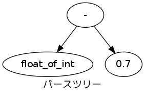

ほげほげ
目次
2章
2.2
- OCaml is an industrial strength programming language supporting functional, imperative and object-oriented styles.
- 太字 斜め a_1 a_2
- このケースでは木構造で表すと下のようにパースされます
そのため、マイナスの引数として渡されたint_of_floatは
int型を持つと期待されているけども 実際にはfloat -> int型を持つとエラーが出力されています。

- 素数判定関数をみる
(* 素数チェック関数4 *) let is_prime4 l n = let l = List.rev l in (* prime_seq2だと素数が大きい順に並ぶので、小さい順に並ぶように順番を逆にする *) let rec check max l n = match l with | [] -> true | x :: xs when x > max -> true | x :: xs -> if n mod x = 0 then false else check max xs n in check (int_of_float (floor (sqrt (float_of_int n)))) l n (* 割る数の上限をmaxとして√nを予め計算しておく *)